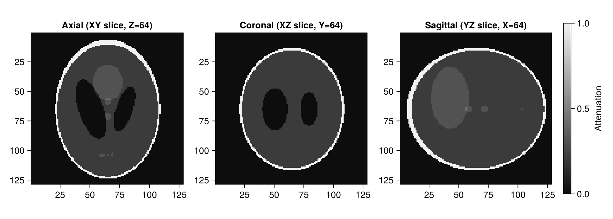
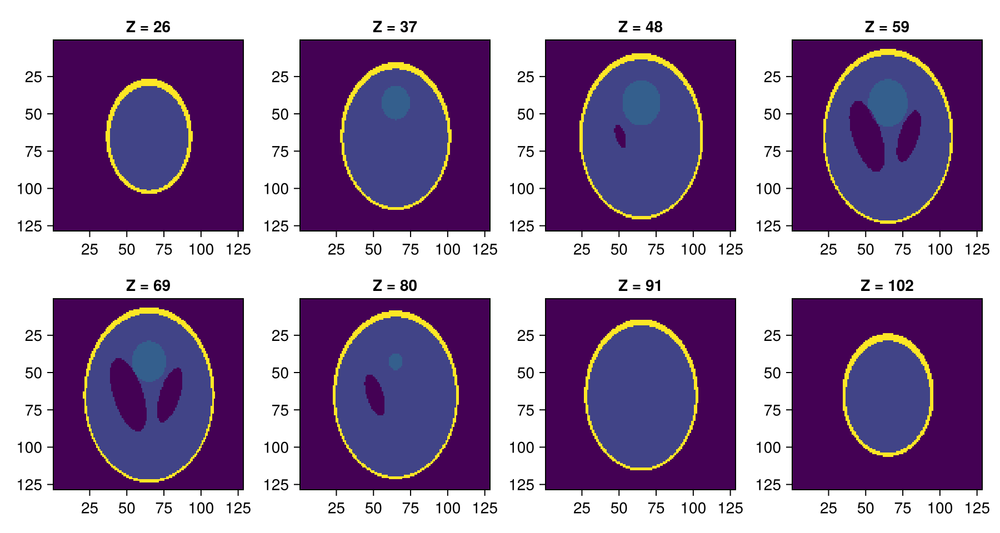
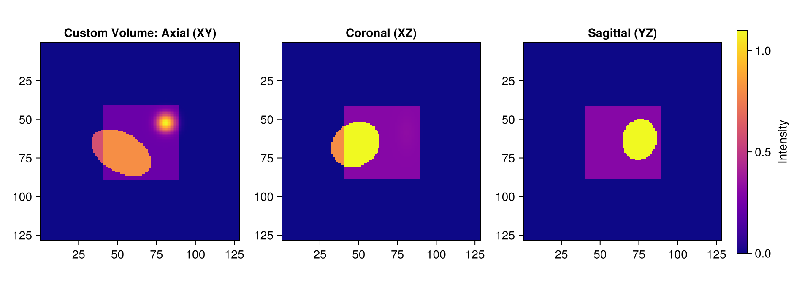
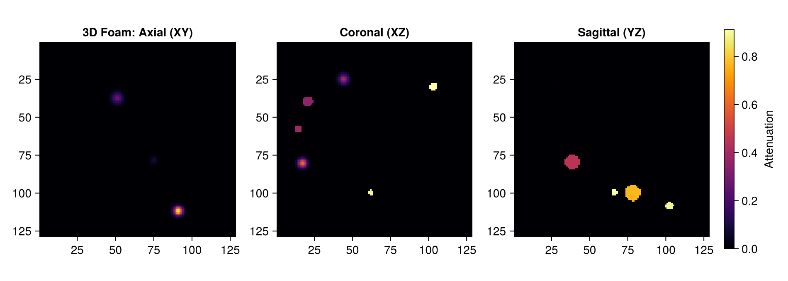
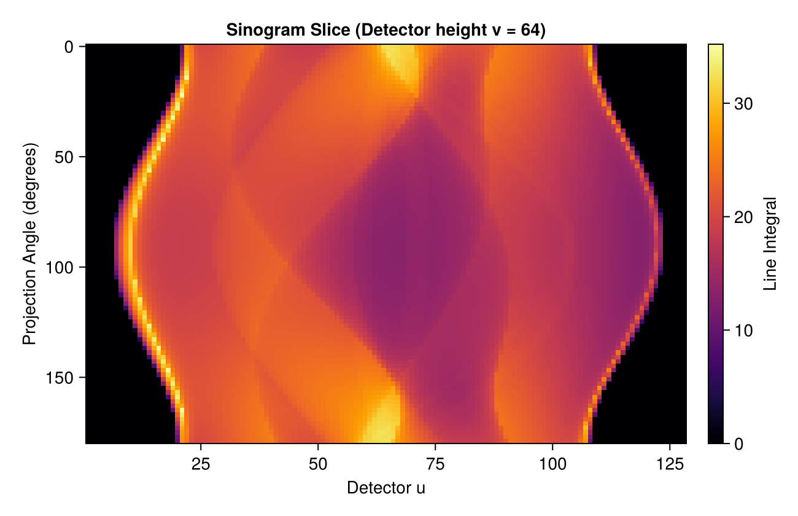
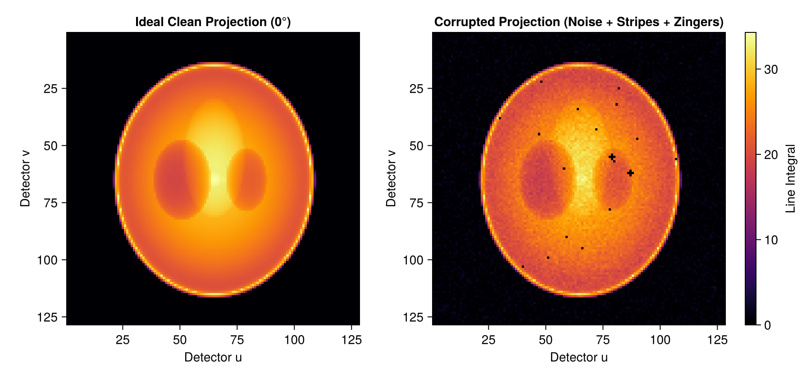

TomoPhantom.jl: 3D Demo & Tutorial
This notebook demonstrates the 3D volumetric capabilities of TomoPhantom.jl, a native Julia port of TomoPhantom. It provides tools for generating analytical 3D phantoms and forward projections for benchmarking tomographic reconstruction algorithms.
Overview
- Standard 3D Library Phantoms (
phantom3d,LibraryModel,default_3d_library_path) - Makie 3D Visualizations (Orthogonal Slices: Axial / Coronal / Sagittal & Slice Montage)
- Custom 3D Volumes via Geometric Primitives (
ObjectSpec3D,object3d) - Random 3D Cellular/Foam Generation (
foam3D) - Analytical 3D Projections / Radiographs (
SinoGeom3D,sino3d_natural,sino3d_u_angle_v_view) - Visualizing Projection Galleries (
sino3d[:, :, 1:20:90]) and Sinogram Slices - Simulating Realistic 3D Projection Artefacts and Noise (
artefacts_mix)
Prerequisites
This tutorial uses Makie (recommended backend: CairoMakie) for visualization. If CairoMakie is not installed in your environment, add it by running using Pkg; Pkg.add("CairoMakie").
0. Environment Setup and Package Loading
Load TomoPhantom.jl and CairoMakie.
using TomoPhantom
using CairoMakie1. Generating Standard 3D Library Phantoms (phantom3d)
TomoPhantom.jl provides standard benchmark 3D volumetric models (3D Shepp-Logan, Defrise, Snake, etc.) stored in Phantom3DLibrary.dat.
Key Types and Functions
NativeCore():- Context struct wrapping dynamic library pointers to the compiled C core (
libtomophantom).
- Context struct wrapping dynamic library pointers to the compiled C core (
default_3d_library_path():- Returns the absolute filesystem path to
Phantom3DLibrary.dat.
- Returns the absolute filesystem path to
LibraryModel(id, path):- Associates an integer model index
idwith the 3D library file (e.g., ID13corresponds to the 3D Shepp-Logan phantom, ID1to the Snake phantom, ID2to the Defrise phantom).
- Associates an integer model index
phantom3d(core, model, n):- Discretizes the analytical model onto an $n \times n \times n$ volumetric grid, returning an
Array{Float32, 3}.
- Discretizes the analytical model onto an $n \times n \times n$ volumetric grid, returning an
# Initialize the native core context
core = NativeCore()
# Locate the compiled 3D model library file
lib3d_path = default_3d_library_path()
# Model 13: 3D Shepp-Logan phantom
model_shepp3d = LibraryModel(13, lib3d_path)
# Generate a 128 x 128 x 128 volume
N = 128
vol_shepp = phantom3d(core, model_shepp3d, N)
println("Array type: ", typeof(vol_shepp))
println("Volume dimensions: ", size(vol_shepp))
println("Minimum intensity: ", minimum(vol_shepp))
println("Maximum intensity: ", maximum(vol_shepp))Array type: Array{Float32, 3}
Volume dimensions: (128, 128, 128)
Minimum intensity: -1.4901161e-8
Maximum intensity: 1.0Visualizing Orthogonal Slices with Makie
A standard medical imaging visualization displays the three principal orthogonal cross-sections:
- Axial: XY plane (transverse slice)
- Coronal: XZ plane (frontal slice)
- Sagittal: YZ plane (lateral slice)
mid = N ÷ 2
slice_axial = vol_shepp[:, :, mid] # XY plane at Z = mid
slice_coronal = vol_shepp[:, mid, :] # XZ plane at Y = mid
slice_sagittal = vol_shepp[mid, :, :] # YZ plane at X = mid
fig1 = Figure(size = (950, 340))
ax1 = Axis(fig1[1, 1], title = "Axial (XY slice, Z=$(mid))", aspect = DataAspect(), yreversed = true)
heatmap!(ax1, slice_axial, colormap = :grays)
ax2 = Axis(fig1[1, 2], title = "Coronal (XZ slice, Y=$(mid))", aspect = DataAspect(), yreversed = true)
heatmap!(ax2, slice_coronal, colormap = :grays)
ax3 = Axis(fig1[1, 3], title = "Sagittal (YZ slice, X=$(mid))", aspect = DataAspect(), yreversed = true)
hm3 = heatmap!(ax3, slice_sagittal, colormap = :grays)
Colorbar(fig1[1, 4], hm3, label = "Attenuation")
fig1
Z-Axis Slice Montage (Depth Gallery)
To inspect volumetric structure along depth, we extract and display a series of evenly spaced axial slices across the Z-axis.
# Sample 8 evenly spaced slices across the central portion of the volume
z_indices = round.(Int, range(N * 0.2, N * 0.8, length = 8))
fig2 = Figure(size = (900, 480))
for (idx, z_idx) in enumerate(z_indices)
r = (idx - 1) ÷ 4 + 1
c = (idx - 1) % 4 + 1
ax = Axis(fig2[r, c], title = "Z = $(z_idx)", aspect = DataAspect(), yreversed = true)
heatmap!(ax, vol_shepp[:, :, z_idx], colormap = :viridis)
end
fig2
2. Custom 3D Volumes via Geometric Primitives (ObjectSpec3D, object3d)
Custom 3D phantoms can be analytically built by assembling primitives such as ellipsoids, cuboids, 3D Gaussians, and cones.
Key Types and Functions
ObjectSpec3D(; object, C0, x0, y0, z0, a, b, c, phi1, phi2, phi3, tt):- Defines a single 3D geometric primitive.
object: Primitive type ("ellipsoid","cuboid","gaussian","cone", etc.)C0: Peak/base intensityx0, y0, z0: 3D centroid coordinates in $[-1.0, 1.0]$a, b, c: Semi-axis widths along X, Y, Zphi1, phi2, phi3: Euler rotation angles in degreestt: Sub-iteration threshold for temporal objects (0 for static)
object3d(core, n, spec):- Rasterizes an
ObjectSpec3Dinto an $n \times n \times n$ array.
- Rasterizes an
# 1. Outer cuboid container
spec_cuboid = ObjectSpec3D(
object = "cuboid",
C0 = 0.3f0,
x0 = 0.0f0, y0 = 0.0f0, z0 = 0.0f0,
a = 0.75f0, b = 0.75f0, c = 0.75f0,
phi1 = 0.0f0, phi2 = 0.0f0, phi3 = 0.0f0
)
# 2. Angled internal ellipsoid
spec_ellipsoid = ObjectSpec3D(
object = "ellipsoid",
C0 = 0.8f0,
x0 = -0.2f0, y0 = 0.1f0, z0 = 0.0f0,
a = 0.35f0, b = 0.2f0, c = 0.25f0,
phi1 = 30.0f0, phi2 = 20.0f0, phi3 = 0.0f0
)
# 3. High-intensity 3D Gaussian core
spec_gauss3d = ObjectSpec3D(
object = "gaussian",
C0 = 1.5f0,
x0 = 0.25f0, y0 = -0.2f0, z0 = -0.1f0,
a = 0.15f0, b = 0.15f0, c = 0.3f0,
phi1 = -45.0f0, phi2 = 0.0f0, phi3 = 15.0f0
)
# Rasterize each primitive and combine additively
vol_custom = object3d(core, N, spec_cuboid) .+
object3d(core, N, spec_ellipsoid) .+
object3d(core, N, spec_gauss3d)
# Visualize central orthogonal slices
fig3 = Figure(size = (950, 340))
ax3_1 = Axis(fig3[1, 1], title = "Custom Volume: Axial (XY)", aspect = DataAspect(), yreversed = true)
heatmap!(ax3_1, vol_custom[:, :, mid], colormap = :plasma)
ax3_2 = Axis(fig3[1, 2], title = "Coronal (XZ)", aspect = DataAspect(), yreversed = true)
heatmap!(ax3_2, vol_custom[:, mid, :], colormap = :plasma)
ax3_3 = Axis(fig3[1, 3], title = "Sagittal (YZ)", aspect = DataAspect(), yreversed = true)
hm3_3 = heatmap!(ax3_3, vol_custom[mid, :, :], colormap = :plasma)
Colorbar(fig3[1, 4], hm3_3, label = "Intensity")
fig3
3. Random 3D Cellular/Foam Generation (foam3D)
For modeling porous materials (metallic foams, bone trabeculae, aerogels), foam3D packs non-overlapping random 3D objects into continuous space.
Function Parameters
foam3D(x0min, x0max, y0min, y0max, z0min, z0max, c0min, c0max, ab_min, ab_max, n, tot_objects, object_type; core, rng):x0min ~ z0max: Spatial bounding box for centroidsc0min, c0max: Intensity rangeab_min, ab_max: Radius/semi-axis rangen: Grid dimension ($n \times n \times n$)tot_objects: Total number of objectsobject_type:"ellipsoid","paraboloid","gaussian", or"mix"- Returns
(phantom, objects): the 3D array and aVector{ObjectSpec3D}.
# Generate a 3D foam volume containing 50 non-overlapping mixed objects
vol_foam, foam_specs3d = foam3D(
-0.8, 0.8, # X-bounds
-0.8, 0.8, # Y-bounds
-0.8, 0.8, # Z-bounds
0.3, 1.0, # Intensity range
0.04, 0.10, # Radius range
N, # Resolution (N x N x N)
50, # Number of objects
"mix"; # Mixed primitive types
core = core
)
println("Successfully generated 3D objects: ", length(foam_specs3d))
# Visualize central orthogonal slices
fig4 = Figure(size = (950, 340))
ax4_1 = Axis(fig4[1, 1], title = "3D Foam: Axial (XY)", aspect = DataAspect(), yreversed = true)
heatmap!(ax4_1, vol_foam[:, :, mid], colormap = :inferno)
ax4_2 = Axis(fig4[1, 2], title = "Coronal (XZ)", aspect = DataAspect(), yreversed = true)
heatmap!(ax4_2, vol_foam[:, mid, :], colormap = :inferno)
ax4_3 = Axis(fig4[1, 3], title = "Sagittal (YZ)", aspect = DataAspect(), yreversed = true)
hm4_3 = heatmap!(ax4_3, vol_foam[mid, :, :], colormap = :inferno)
Colorbar(fig4[1, 4], hm4_3, label = "Attenuation")
fig4
4. Analytical 3D Projections / Radiographs (SinoGeom3D, sino3d_natural)
In 3D tomography, TomoPhantom computes exact analytical line integrals over 3D geometric models without spatial discretization.
Key Types and Functions
SinoGeom3D(phantom_size, detector_u, detector_v, angles_deg, z1, z2):- Defines a 3D parallel-beam projection geometry.
phantom_size: Reference grid resolutiondetector_u,detector_v: Number of horizontal and vertical detector channelsangles_deg: Vector of projection angles in degrees (Vector{Float32})z1, z2: Vertical slice constraints ($0 \le z_1 < z_2 \le \text{detector\_v}$)
sino3d_natural(core, model, geom):- Computes analytical 3D projection data, returning an
Array{Float32, 3}structured as[detector_u, sub_v, angle]wheresub_v = z2 - z1.
- Computes analytical 3D projection data, returning an
sino3d_u_angle_v_view(sino3d):- Permuted dimension view with layout
[detector_u, angle, sub_v], commonly expected by 3D reconstruction toolkits.
- Permuted dimension view with layout
# 3D acquisition geometry: 90 angles spanning 0° to 179°, 128x128 flat-panel detector
angles3d = collect(Float32, range(0.0f0, 179.0f0; length = 90))
det_u = 128
det_v = 128
geom3d = SinoGeom3D(N, det_u, det_v, angles3d, 0, det_v)
# Evaluate analytical projections for the 3D Shepp-Logan model
sino3d = sino3d_natural(core, model_shepp3d, geom3d)
println("Projection data shape (detector_u × sub_v × angles): ", size(sino3d))Projection data shape (detector_u × sub_v × angles): (128, 128, 90)Visualizing 3D Projection Data
3D projection data can be inspected from two complementary perspectives:
- Projection Images (Radiographs across angles): 2D detector images captured at various projection angles. Below, we display the 1st, 21st, 41st, 61st, and 81st projections (
sino3d[:, :, 1:20:90]) side-by-side to observe the rotation of the internal structures. - Sinogram Slice: A 2D sinogram slice at a fixed vertical detector position (
sino3d[:, v_idx, :]).
# Display the 1st, 21st, 41st, 61st, and 81st projection images (sino3d[:, :, 1:20:90])
proj_indices = 1:20:90
fig5_proj = Figure(size = (1250, 290))
for (col, idx) in enumerate(proj_indices)
ang = round(geom3d.angles_deg[idx], digits = 1)
ax = Axis(fig5_proj[1, col],
title = "Proj #$(idx) ($(ang)°)",
xlabel = "Detector u",
ylabel = col == 1 ? "Detector v" : "",
aspect = DataAspect(),
yreversed = true
)
hm = heatmap!(ax, 1:det_u, 1:det_v, sino3d[:, :, idx], colormap = :inferno)
if col == length(proj_indices)
Colorbar(fig5_proj[1, col + 1], hm, label = "Line Integral")
end
end
fig5_proj
# 2D Sinogram slice at mid-height (v = det_v ÷ 2)
mid_v = det_v ÷ 2
sino_slice = sino3d[:, mid_v, :] # [u, angles]
fig5_sino = Figure(size = (650, 420))
ax = Axis(fig5_sino[1, 1],
title = "Sinogram Slice (Detector height v = $(mid_v))",
xlabel = "Detector u",
ylabel = "Projection Angle (degrees)",
yreversed = true
)
hm = heatmap!(ax, 1:det_u, geom3d.angles_deg, sino_slice, colormap = :inferno)
Colorbar(fig5_sino[1, 2], hm, label = "Line Integral")
fig5_sino
5. Simulating 3D Projection Artefacts and Noise (artefacts_mix)
artefacts_mix operates seamlessly on 3D volumetric projection datasets (Array{<:Real, 3}). It simulates detector column stripes (producing ring artefacts upon reconstruction), photon noise, and outlier spikes (zingers).
# Apply a combined suite of 3D artefacts to the projection data
sino3d_noisy = artefacts_mix(
sino3d;
noise_type = "Gaussian",
noise_amplitude = 0.02, # Noise amplitude
stripes_percentage = 3.0, # Percentage of detector columns with stripes (%)
stripes_intensity = 0.2, # Stripe intensity multiplier
stripes_maxthickness = 2, # Stripe width (pixels)
zingers_percentage = 0.2, # Percentage of zinger outliers (%)
zingers_modulus = 10,
noise_seed = 42
)
# Compare clean vs degraded radiographs
fig6 = Figure(size = (900, 420))
ax6_1 = Axis(fig6[1, 1], title = "Ideal Clean Projection (0°)", xlabel = "Detector u", ylabel = "Detector v", aspect = DataAspect(), yreversed = true)
heatmap!(ax6_1, 1:det_u, 1:det_v, sino3d[:, :, 1], colormap = :inferno)
ax6_2 = Axis(fig6[1, 2], title = "Corrupted Projection (Noise + Stripes + Zingers)", xlabel = "Detector u", ylabel = "Detector v", aspect = DataAspect(), yreversed = true)
hm6_2 = heatmap!(ax6_2, 1:det_u, 1:det_v, sino3d_noisy[:, :, 1], colormap = :inferno)
Colorbar(fig6[1, 3], hm6_2, label = "Line Integral")
fig6
Summary
In this notebook, we demonstrated key 3D workflows in TomoPhantom.jl:
phantom3d: Rendering standard 3D analytical benchmark phantoms (3D Shepp-Logan, etc.)object3d&ObjectSpec3D: Constructing parametric 3D phantoms from geometric primitivesfoam3D: Automatic generation of 3D cellular and porous microstructuressino3d_natural&SinoGeom3D: Exact analytical 3D projection data generation without inverse crimesino3d_u_angle_v_view: Dimension-permuted views for 3D reconstruction pipelinesartefacts_mix: Emulating realistic 3D acquisition noise, rings/stripes, and zingersCairoMakie: High-quality visualization of orthogonal planes (Axial, Coronal, Sagittal), depth galleries, radiograph projection sequences (sino3d[:, :, 1:20:90]), and sinogram slices
For temporal (4D) dynamic simulations and flat-field synthesis, refer to demo_temporal_4d.ipynb, demo_flats_and_normalization.ipynb, and the official documentation.
This page was generated using Literate.jl.